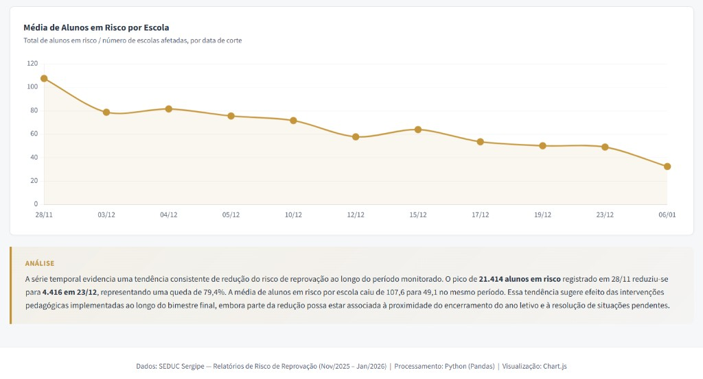

Contexto e Problema
A Secretaria de Educação de Sergipe gerava relatórios periódicos sobre estudantes em risco de reprovação, produzindo arquivos Excel diários com a situação de risco por aluno, escola, série e turma. Contudo, a análise isolada de cada relatório não permitia identificar tendências temporais nem avaliar se as intervenções pedagógicas estavam efetivamente reduzindo o risco ao longo do tempo. Cada foto diária era útil, mas desconectada da trajetória mais ampla.
Imagens do Sistema



Solução Desenvolvida
Desenvolvi um sistema automatizado de análise temporal que transforma relatórios diários isolados em uma ferramenta de monitoramento longitudinal:
- Extração automatizada de datas: Parsing de nomes de arquivos para extrair datas (suportando formatos DD.MM.AAAA e legado DD_MM)
- Processamento padronizado: Leitura e filtragem de cada relatório para selecionar alunos com risco_reprovacao = "Sim"
- Agregação longitudinal: Contagem de alunos únicos em risco por escola (código INEP), série, turma e data — construindo uma base temporal
- Resumo temporal: Consolidação diária com totais de alunos em risco, quantidade de escolas afetadas e número de turmas impactadas
- Saídas duplas: Base temporal detalhada (base_temporal_detalhada.xlsx) e resumo consolidado (resumo_temporal.xlsx)
Bases de Dados Utilizadas
- Relatórios diários de risco em Excel (múltiplos arquivos datados, 2,2–8,3 MB cada)
- Registros individuais com escola (INEP), série, turma, nome e indicador de risco
Tecnologias Utilizadas
Resultados e Impacto
O sistema transformou relatórios estáticos e isolados em uma ferramenta de análise longitudinal, permitindo à Secretaria de Educação acompanhar a evolução do risco de reprovação ao longo de semanas e meses. Essa visão temporal possibilitou avaliar a efetividade de intervenções pedagógicas e identificar escolas onde o risco se mantinha estável ou crescente — sinalizando necessidade de ações adicionais. A ferramenta contribuiu diretamente para o monitoramento de políticas de permanência e sucesso escolar.